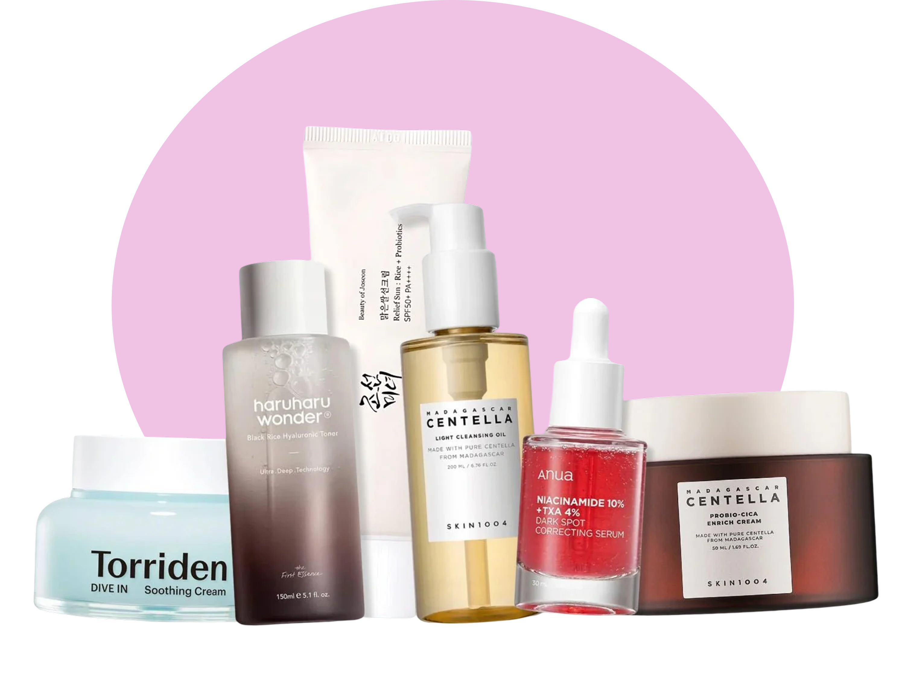

אתר ההמלצות של K-GLOW
נמאס לך ממוצרים שלא עובדים? באתר שלנו תגלי מה מתאים לסוג הפנים שלך ואילו חומרים יש בכל מוצר שיגרום לעור שלך לזהור.
מה תמצאי באתר?
מי אנחנו?
הכירו את נעה והדר, הסטודנטיות מאחורי המיזם, והסיפור האישי שהוביל להקמת האתר.
לקריאת הסיפור שלנושגרת טיפוח מותאמת לפי סוג עור
המדריך המלא שלנו להתמודדות עם אקנה תקופתי, קמטים, עור יבש שמתקלף וצלקות.
לשגרת טיפוח לאקנההטיפים של K-GLOW לעור מושלם
אל תתני לשמש להרוס לך את העור!
אם את מתמודדת עם פצעונים, קרם הגנה (SPF) הוא חובה. כשהשמש פוגעת בעור פצוע, היא מייבשת אותו ומאלצת אותו לייצר עוד שומן. גרוע מכך – היא הופכת את הפצעונים הישנים לכתמים קבועים, צלקות כהות ופיגמנטציה שקשה מאוד להעלים. בשבילך זה לא רק למנוע כוויות, זה למנוע צלקות!
מייבשת את הפצעים? עצרי מיד!
הטעות הכי נפוצה היא לחשוב שעור שמן עם אקנה צריך "לייבש" ולוותר על קרם לחות. עור מיובש הוא עור מבוהל. כשהעור מרגיש שחסרה לו לחות, הוא נכנס למגננה ומייצר פי שניים שומן כדי להגן על עצמו, מה שמוביל לחסימת נקבוביות ולעוד פצעונים. לחות היא החברה הכי טובה שלך!
